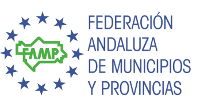
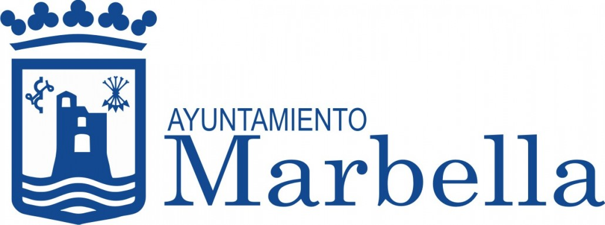
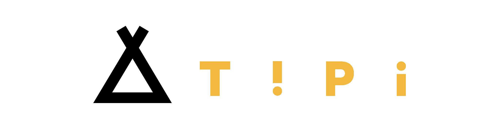

Experiencia
Algunos de nuestros trabajos







En ENREDA podemos ofrecerte todo tipo de herramientas y servicios para ayudarte en los procesos de Participación Ciudadana que quieras iniciar. Tanto digitales como presenciales.
CONSUL es la mejor plataforma de participación existente actualmente. Su potencia y versatilidad la ha llevado a ser usada por los Ayuntamientos de las principales capitales de España y Latinoamérica y recibir el Premio de Servicio Público 2018 de ONU. ENREDA instala, adapta, configura y desarrolla CONSUL a las necesidades de tu organización.
ENREDA posee 10 años de experiencia desarrollado procesos participativos. Estos son algunos de los servicios que podemos ofrecerte.
Intervenimos en la toma de decisiones políticas cuando se abren canales previos para el fomento de la participación ciudadana y la co-decisión; pero también cuando se logra que los poderes públicos asuman las reivindicaciones que posee la ciudadanía, a través de la organización y la búsqueda y creación de herramientas que abordan la gestión y la generación de propuestas.